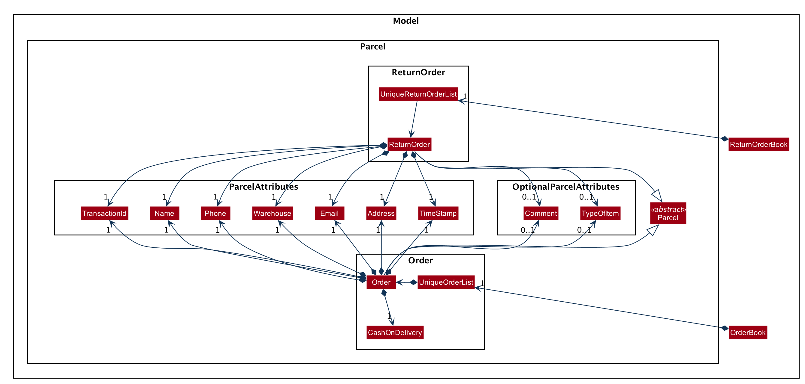

By: CS2103T-W12-01 Since: Jan 2020 Licence: MIT
- 1. Setting up
- 2. Design
- 3. Implementation
- 4. Documentation
- 5. Testing
- 6. Dev Ops
- Appendix A: Product Scope
- Appendix B: User Stories
- Appendix C: Use Cases
- Appendix D: Non Functional Requirements
- Appendix E: Glossary
- Appendix F: Product Survey
- Appendix G: Instructions for Manual Testing
- G.1. Launch Delino
- G.2. Inserting an order
- G.3. Deleting an order
- G.4. Edit orders
- G.5. Import orders
- G.6. List orders
- G.7. Search an order
- G.8. Mark order as Done
- G.9. Clear orders
- G.10. Help
- G.11. Obtain all nearby orders based on area or postal sector
- G.12. Undo previous action
- G.13. Saving data
- G.14. Exit
1. Setting up
Refer to the guide here.
2. Design
2.1. Architecture

The Architecture Diagram given above explains the high-level design of the App. Given below is a quick overview of each component.
The .puml files used to create diagrams in this document can be found in the diagrams folder.
Refer to the Using PlantUML guide to learn how to create and edit diagrams.
|
-
At app launch: Initializes the components in the correct sequence, and connects them up with each other.
-
At shut down: Shuts down the components and invokes cleanup method where necessary.
Commons represents a collection of classes used by multiple other components.
The following class plays an important role at the architecture level:
-
LogsCenter: Used by many classes to write log messages to the App’s log file.
The rest of the App consists of four components.
Each of the four components
-
Defines its API in an
interfacewith the same name as the Component. -
Exposes its functionality using a
{Component Name}Managerclass.
For example, the Logic component (see the class diagram given below) defines it’s API in the Logic.java interface and exposes its functionality using the LogicManager.java class.

How the architecture components interact with each other
The Sequence Diagram below shows how the components interact with each other for the scenario where the user issues the command delete 1.

delete 1 commandThe sections below give more details of each component.
2.2. UI component

API : Ui.java
The UI consists of a MainWindow that is made up of parts e.g.CommandBox, ResultDisplay, PersonListPanel, StatusBarFooter etc. All these, including the MainWindow, inherit from the abstract UiPart class.
The UI component uses JavaFx UI framework. The layout of these UI parts are defined in matching .fxml files that are in the src/main/resources/view folder. For example, the layout of the MainWindow is specified in MainWindow.fxml
The UI component,
-
Executes user commands using the
Logiccomponent. -
Listens for changes to
Modeldata so that the UI can be updated with the modified data.
2.3. Logic component
API :
Logic.java
-
Logicuses theOrderBookParserclass to parse the user command. -
This results in a
Commandobject which is executed by theLogicManager. -
The command execution can affect the
Model(e.g. adding a new order). -
The result of the command execution is encapsulated as a
CommandResultobject which is passed back to theUi. -
In addition, the
CommandResultobject can also instruct theUito perform certain actions, such as displaying help to the user.
Given below is the Sequence Diagram for interactions within the Logic component for the execute("delete 1") API call.

delete 1 Command
The lifeline for DeleteCommandParser should end at the destroy marker (X) but due to a limitation of PlantUML, the lifeline reaches the end of diagram.
|
2.4. Model component
API : Model.java
The Model,
-
stores a
UserPrefobject that represents the user’s preferences. -
stores the Order Book data.
-
exposes an unmodifiable
ObservableList<Order>that can be 'observed' e.g. the UI can be bound to this list so that the UI automatically updates when the data in the list change. -
does not depend on any of the other three components.
| An Order class consists of nine different fields as shown in the image. Every order is part of a UniqueOrderList and every UniqueOrderList is part of an OrderBook.  |
2.5. Storage component

API : Storage.java
The Storage component,
-
can save
UserPrefobjects in json format and read it back. -
can save both OrderBook and ReturnOrderBook data in json format and read it back.
2.6. Common classes
Classes used by multiple components are in the seedu.addressbook.commons package.
3. Implementation
This section describes some noteworthy details on how certain features are implemented.
3.1. Nearby feature
The nearby feature allows the user to view all orders that are located at a particular area
based on a given search criteria.
There are currently two possible search options:
-
Searching by postal sector
-
A postal sector refers to the first two digits of a six digit Singapore postal code.
-
The list of postal sectors and their corresponding general locations can be found on this website.
-
-
Searching by area
-
An area refers to one of the five areas of Singapore
-
Central
-
East
-
North East
-
West
-
North
-
-
You can obtain more detailed information about each area from this website
-
The nearby feature was implemented as a NearbyCommand in the Logic package.

3.1.2. Sequence Diagram for searching by postal sector
The sequence diagram for the Nearby Command when searching by postal sector is shown below:

The arguments passed to the Nearby Command will be parsed by the NearbyCommandParser class.
If the given arguments are valid, a new NearbyCommand object will be returned.
In this class, invalid arguments will result in a ParseException.
Two types of invalid arguments are checked for: empty arguments
and arguments with only whitespace characters.
The execute() function of the NearbyCommand will first check if the given arguments
are in the format required for postal sector search (the argument can be converted into an integer).
The check is done by the isPostalSectorSearch() function.
If the first check is successful, the argument will be converted into an integer and
a second check is performed via the isValidPostalSector(Index postalSector) function
of the NearbyCommandUtil helper class.
|
|
The showPostalSectors(Model model, Index postalSector) function of the NearbyCommand is called.
This function updates the model’s filtered order list using the predicate obtained from the
getPostalSectorPredicate() function.
A CommandResult is then generated and returned to the LogicManager.
3.1.3. Sequence Diagram for searching by area
The sequence diagram for the Nearby Command when searching by area is shown below:
The NearbyCommandParser will check for invalid arguments given by the user.
Invalid arguments can be either empty arguments or arguments with
only whitespace characters.
A ParseException will be generated if an invalid argument is present.
A new NearbyCommand will be created and returned to LogicManager.
LogicManager will then call the execute() function of the NearbyCommand.
There will then be a check for whether the given argument is a valid area with the
function isValidArea(String area) present in the DistrictInfo class.
|
|
The model will then be updated using the predicate obtained from the getAreaPredicate() function.
A new CommandResult will be created and returned to the LogicManager.
3.2. Import feature
The import feature allows users to save the trouble of adding the delivery orders and the return orders one by one when they have large amount of delivery orders or return orders to add into Delino.
The import feature was implemented as a ImportCommand in the Logic package.

3.2.2. Sequence Diagram for importing the csv file.
The sequence diagram for the Import Command when import the data from the csv file is shown below:

The arguments passed to the Import Command will be parsed by the ImportCommandParser class.
If the given arguments are valid, a new ImportCommand object will be returned.
In this class, invalid arguments will result in a ParseException.
Two types of checks will be done before returning the ImportCommand:
-
Check whether the file is exists in the data folder.
-
Check whether the first prefix is
orderTypeprefix.
|
|
After the ImportCommand object is being returned to the LogicManager, the LogicManager will start
to run the execute the import Command, this is will be shown at the Execution of Import Command Sequence Diagram.
3.2.3. Execution of Import Command Sequence Diagram

The execute(model) function of the ImportCommand will first check if the data given starts with
order or return and pass to the InsertCommandParser or ReturnCommandParser respectively.
Afterwards, InsertCommandParser or ReturnCommandParser will return the InsertCommand or ReturnCommand respective
if it successfully parse the data. The ImportCommand will then call the execute(Model) function of InsertCommand
or ReturnCommand. This will cause a delivery order or return order being added into the Model.
The ImportCommand will call its own printResult() function and return a String message to the CommandResult object
which is then pass back to the LogicManager.
3.3. Logging
We are using java.util.logging package for logging. The LogsCenter class is used to manage the logging levels and logging destinations.
-
The logging level can be controlled using the
logLevelsetting in the configuration file (See Section 3.4, “Configuration”) -
The
Loggerfor a class can be obtained usingLogsCenter.getLogger(Class)which will log messages according to the specified logging level -
Currently log messages are output through:
Consoleand to a.logfile.
Logging Levels
-
SEVERE: Critical problem detected which may possibly cause the termination of the application -
WARNING: Can continue, but with caution -
INFO: Information showing the noteworthy actions by the App -
FINE: Details that is not usually noteworthy but may be useful in debugging e.g. print the actual list instead of just its size
3.4. Configuration
Certain properties of the application can be controlled (e.g user prefs file location, logging level) through the configuration file (default: config.json).
4. Documentation
Refer to the guide here.
5. Testing
Refer to the guide here.
6. Dev Ops
Refer to the guide here.
Appendix A: Product Scope
Target user profile:
-
has a need to manage his or her delivery orders conveniently
-
prefer desktop apps over other types
-
can type fast
-
prefers typing over mouse input
-
is reasonably comfortable using CLI apps
Value proposition: manage their deliveries faster than a typical mouse/GUI driven app
Appendix B: User Stories
Priorities: High (must have) - * * *, Medium (nice to have) - * *, Low (unlikely to have) - *
| Priority | As a … | I want to … | So that I can… |
|---|---|---|---|
|
new courier |
see usage instructions |
refer to instructions when I forget how to use the App |
|
courier |
import a list of orders |
refer to the list of orders to be delivered |
|
courier |
see a list of orders that are yet to be delivered |
gauge how long I need to complete my orders |
|
courier |
find an order by name/transaction ID/timestamp |
locate details of an order without having to go through the entire list |
|
courier |
recover any deletion of orders |
recover any accidental deletions |
|
courier |
edit information in delivery orders |
rectify any errors in delivery orders |
|
courier |
view delivery orders based on a given postal sector |
easily find delivery orders in the same general location |
|
courier |
see the warehouse details of the orders |
know where to get the packages from |
|
courier |
see my delivery orders without internet access |
continue with deliveries as per normal |
|
courier |
know the delivery location of the parcels |
plan my delivery route better |
|
courier |
be able to navigate the application easily |
minimize the downtime in using the App |
|
courier |
mark my deliveries as done upon completion |
keep track of orders better |
|
courier |
know customers' payment methods |
be prepared to collect any payment upon delivery |
|
courier |
know the nearest popstation/pick-up location for returned parcels |
plan my route to pick up parcels to be returned |
|
advanced courier |
use shorter versions of a command |
type a command faster |
|
courier |
keep track of the amount I have received for the day’s orders and the change I should give back |
know whether the cash balance is correct at the end of the day |
|
caring courier |
generate CSV based on what order I select |
send the list of orders to my colleagues |
|
courier |
report areas of traffic congestion to my colleagues |
help my colleagues reduce their delivery times. (Requires Internet Connection) |
|
courier |
keep track of areas with traffic congestion |
speed up my delivery time |
|
courier |
let the customer acknowledge when I have delivered the package |
provide proof that the customer has received the package |
|
courier |
know the nearest customer to me |
reduce the time spent and distance travelled |
|
busy courier |
let another courier handle one of my orders |
request my colleagues to help me when I cannot complete the orders by today |
|
courier |
contact my colleagues easily |
ask for help if I am not able to deliver the packages |
|
courier |
change the colour scheme of the application to better suit my eyes such as dark mode or a custom colour scheme |
customize my user experience |
|
courier |
filter all the deliveries to a particular region |
arrange to deliver all packages in that region |
|
courier |
be able to notify the customer when I am on my way |
let the customer know when I am delivering the package to their location |
|
forgetful courier |
have visual cues or notification if my order is an urgent delivery |
prioritize on which order to deliver first |
|
curious and helpful courier |
see how others are doing with their orders |
help them if they have any difficulties delivering all of their parcels by the deadline |
|
mindful courier |
know about the weather of the day |
plan ahead for any changes to my deliveries |
|
courier |
look at the current time |
revise my delivery routes if necessary |
Appendix C: Use Cases
(For all use cases below, the System is the Delino and the Actor is the user, unless specified otherwise)
Use case: UC01 - Insert an order
MSS
-
User key in the order details.
-
Delino inserts the order details.
-
Delino displays order added.
Use case ends.
Extensions
-
1a. Delino detects invalid syntax.
-
1a1. Delino shows an error message.
Use case ends.
-
Use case: UC02 - Clear all orders
MSS
-
User requests to clear all orders.
-
Delino clear all existing orders.
-
Delino displays order cleared message.
Use case ends.
Extensions
-
1a. Delino detects invalid syntax.
-
1a1. Delino shows an error message.
Use case ends.
-
-
1b. Delino detects no flag
-f.-
1b1. Delino trigger pop-up message.
-
1b2a. User select
yesbutton.-
1b2a1. Return to step 2.
-
-
1b2b. User select
nobutton.-
1b2b1. Use case ends.
-
-
-
-
1c. Delino detects no orders.
-
1c1. Delino shows no order to be cleared message.
Use case ends.
-
Use case: UC03 - Delete an order
MSS
-
User requests to list orders (UC10).
-
User requests to delete a specific order in the list.
-
Delino deletes the order.
-
Delino displays order deleted.
Use case ends.
Extensions
-
3a. Delino detects invalid syntax.
-
3a1. Delino shows an error message.
Use case ends.
-
-
3b. Delino unable to detect any order with the transaction id.
-
3b1. Delino shows no order found message.
Use case ends.
-
Use case: UC04 - Mark order as done
MSS
-
User request to mark order as done.
-
Delino changes order status to done.
-
Delino display marked order.
Use case ends.
Extensions
-
1a. Delino detects invalid syntax.
-
1a1. Delino shows an error message.
Use case ends.
-
-
1b. Delino unable to detect any order with the transaction id.
-
1b1. Delino shows no order found message.
Use case ends.
-
Use case: UC05 - Editing order details
MSS
-
User request to edit order details.
-
Delino edit the order details
-
Delino display changes made.
Use case ends.
Extensions
-
1a. Delino detects invalid syntax.
-
1a1. Delino shows an error message.
Use case ends.
-
-
1b. Delino unable to detect any order with the transaction id.
-
1b1. Delino shows no order found message.
Use case ends.
-
Use case: UC06 - Exit the program
Precondition: User keys in correct exit command syntax.
MSS
-
User request to exit the program.
-
Delino displays goodbye message.
-
Delino closes the application window.
Use case ends.
Use case: UC07 - Search an order
MSS
-
User request to search specific order by transaction id
-
Delino display the requested order.
Use case ends.
Extensions
-
1a. Delino detects invalid syntax.
-
1a1. Delino shows an error message.
Use case ends.
-
-
1b. Delino unable to find order with the transaction id.
-
1b1. Delino display order not found message.
Use case ends.
-
Use case: UC08 - Request for help
MSS
-
User request for help to navigate around application.
-
Delino shows help message.
Use case ends.
Use case: UC09 - Importing order details
MSS
-
User requests to import orders from an external file.
-
Delino checks for file existence.
-
Delino imports all orders from the external file.
-
Delino displays all orders imported.
Use case ends.
Extensions
-
1a. Delino detects invalid syntax.
-
1a1. Delino shows an error message.
Use case ends.
-
-
2a. Delino detects invalid file path.
-
2a1. Delino shows the invalid file path error message
Use case ends.
-
-
3a. Delino is unable to open the file.
-
3a1. Delino shows permission denied error message.
Use case ends.
-
Use case: UC10 - Listing all orders
MSS
-
User requests to view the list of orders.
-
Delino display list of orders.
Use case ends.
Extensions
-
1a. Delino detects invalid syntax.
-
1a1. Delino shows an error message.
Use case ends.
-
-
2a. Delino detects no orders.
-
2a1. Delino shows empty order list message.
Use case ends.
-
Use case: UC11 - Order returns
MSS
-
User requests to add order return.
-
Delino add order return.
-
Delino display order return added.
Use case ends.
Extensions
-
1a. Delino detects invalid syntax.
-
1a1. Delino shows an error message.
Use case ends.
-
Use case: UC12 - Obtain orders in a postal sector
MSS
-
User requests to obtain orders in a specified postal sector
-
Delino obtains all orders located in the postal sector
-
Delino display the list of orders
Use case ends.
Extensions
-
1a. Delino detects invalid syntax.
-
1a1. Delino shows an error message.
Use case ends.
-
-
2a. Delino detects no orders.
-
2a1. Delino shows empty order list message.
Use case ends.
-
Use case: UC13 - Undo previous command
MSS
-
User request to undo current command
-
Delino revert back to the previous state.
-
Delino displays undo message.
Use case ends.
Extensions
-
1a. Delino detects invalid syntax.
-
1a1. Delino shows an error message.
Use case ends.
-
-
2a. Delino detects nothing to be undo.
-
2a1. Delino shows nothing to be undone message.
Use case ends.
-
Appendix D: Non Functional Requirements
-
Should work on any mainstream OS as long as it has Java
11or above installed. -
Should be able to hold up to 350 orders without a noticeable sluggishness in performance for typical usage.
-
A user with above average typing speed for regular English text (i.e. not code, not system admin commands) should be able to accomplish most of the tasks faster using commands than using the mouse.
-
The system should be able to respond within three seconds.
-
The system should be able to work without internet access.
-
A user should be able to get all the information he/she needs within four commands.
-
A user should be able to familiarise himself/herself within an hour of usage.
Appendix E: Glossary
| Prefix | Meaning | Used in the following Command(s) |
|---|---|---|
tid/ |
Transaction ID |
Insert, Return |
n/ |
Customer Name |
Insert, Return |
a/ |
Address |
Insert, Return |
p/ |
Phone Number |
Insert, Return |
e/ |
Insert, Return, Edit |
|
ts/ |
Delivery Date And Time |
Insert |
w/ |
Warehouse Location |
Insert, Return |
cod/ |
Cash On Delivery |
Insert |
c/ |
Comments by Customer |
Insert, Return |
type/ |
Type of Item |
Insert, Return |
| Command | Flag | Meaning |
|---|---|---|
Clear |
-f |
Force clear, no user confirmation will be requested |
Search |
-n |
Search using Name |
Search |
-t |
Search using Transaction ID |
Appendix F: Product Survey
Product Name
Author: …
Pros:
-
…
-
…
Cons:
-
…
-
…
Appendix G: Instructions for Manual Testing
Given below are instructions to test the app manually.
| These instructions only provide a starting point for testers to work on; testers are expected to do more exploratory testing. |
G.1. Launch Delino
-
Initial launch
-
Ensure that you have Java 11 installed in your computer
-
Download the latest Delino.jar
-
Copy the jar file to the folder you would like to use as a home address for Delino application Expected: Shows the GUI of the Delino App. The window size may not be optimum
-
G.2. Inserting an order
-
Insert a minimum of 2 orders
-
Insert command format:
inserttid/TRANSACTION_IDn/CUSTOMER_NAMEa/ADDRESSp/PHONE_NUMBERe/EMAILts/DELIVERY_DATE_&_TIMEw/WAREHOUSE_LOCATIONcod/CASH_ON_DELIVERY[c/COMMENTS_BY_CUSTOMER][type/TYPE_OF_ITEM] -
Test case:
inserttid/9876543210n/John Doea/Blk 572 Hougang st 51 #10-33 S530572p/98766789e/johndoe@example.comts/2020-02-20 1300w/Yishuncod/$4
Expected: Inserts an order with the above details to the list and displayed on the GUI -
Test case:
inserttid/1023456789n/Amos Cheonga/Blk 572 Hougang st 51 #11-37 S530572p/9001 0019e/amoscheong@example.comts/2020-03-10 1650w/Marsilingcod/$5c/Leave it at the risertype/glass
Expected: Inserts the order to the list, including the item type and the order comment -
Test case: Invalid Syntax
Expected: No order is added. Error details shown in the response message. A help message displayed for user to insert accordingly. Status bar remain unchanged -
Test case: Insert order with existing Transaction ID in list
Expected: An error will occur and a message will be displayed, stating that order with duplicate ID cannot be inserted into the list
-
G.3. Deleting an order
-
Deleting an order with respect to the current list displayed
-
Delete command format:
deleteINDEX -
Prerequisites: List all orders using the
listcommand. Multiple orders in the list -
Test case:
delete1
Expected: The first order item in the current list will be removed. Details of the deleted order will be displayed in the response box -
Test case:
delete2
Expected: The second item in the current list will be removed. Details of the deleted order will be displayed in the response box -
Test case: Invalid Syntax
Expected: No order is deleted. An error message will be displayed in the response box -
Test case:
deleteINVALID_INDEX
Expected: No order is deleted. An error message will be displayed in the response box, indicating that the index cannot be found in the list
-
G.4. Edit orders
-
You can edit the details of the delivery order by specifying the transaction id, the field you want to change and the value that is required to update
-
Edit command format:
editINDEXPREFIX/NEW_VALUE -
Test case:
edit1n/Xuan En
Expected: The first index customer’s name is changed to Xuan En -
Test case:
edit2p/99521654
Expected: The second index phone number is changed to 9952 1654 -
Test case:
edit1a/Blk 123 Pasir Ris street 51 #12-23 S510123
Expected: The first index is edited where the address of the customer of the order will be changed to Blk 123 Pasir Ris Street 51 #12-23 S510123 -
Test case:
edit2n/Mr Tanp/98776655a/Blk 888 Jurong East street 2 #01-02 S521731
Expected: The first index of the list is edited. The name is changed to Mr Tan, phone number changed to 98776655 and address will be changed to Blk 888 Jurong East street 2 #01-02 S521731 -
Test case:
edit1ts/09/08/2020
Expected: The delivery date of the first index of the customer will be rescheduled to 09/08/2020 -
Test case:
edit1ts/02/02/2020(Assuming this date has passed)
Expected: The response box will display an error message as it is impossible to put a date that is already passed
-
G.5. Import orders
-
Import a new list of orders from a .csv file given by the company
-
Import command format:
importNAME_OF_FILE.csv -
Prerequisites : The import file must be a
.csv fileand thecsv fileshould be insidedatafolder which is the same directory as the JAR file. Otherwise, it will cause the app to raise an exception and print the error message. Should not import a file that is non-existent -
Test case:
importcustomers_20_02_2020.csv
Expected: In the response box, a message will appear to indicate that the import is successful. At the same time, the contents of the .csv file will be shown to the user in the form of a list of orders
-
G.6. List orders
-
List all the delivery orders for the user. The type of orders to be listed is dependent on the command input from the user
-
Test case:
list
Expected: List all the delivery orders, showing all completed and uncompleted orders. -
Test case:
listdone
Expected: List all completed delivery orders. -
Test case:
listundone
Expected: List all uncompleted delivery orders. -
Test case:
listANY_WORD_OTHER_THAN_UNDONE_AND_DONE
Expected: An error will occur, a message will appear in the response box, indicating an invalid list command
-
G.7. Search an order
-
Search an order based on either the person’s Name or by the Transaction ID
-
Search command format:
searchFLAGKEYWORD -
Prerequisite: Call the list command. The orders found are dependent on what orders are listed before. For example, if the user calls a
list doneand then calls asearchcommand, the orders from the output list is based on the list of completed orders -
Test case:
listdone
search-tA18512357Z
Expected: Specifically search the order that has the transaction ID of A18512357Z from a list of completed delivery orders and print it to the user. -
Test case:
listundone
search-nAmos
Expected: Print all uncompleted delivery orders with any person that has the name ‘Amos’ in it. It will not print out completed delivery orders with a person named ‘Amos’ despite having the same keyword -
Test case:
list
search-nAmos
Expected: The program will look up all the delivery orders, regardless of completed or uncompleted orders and print out all orders in a list with the word ‘Amos’ in the name -
Test case:
list
search
Expected: An error message will appear in the response box, stating that the argument cannot be empty and there are no changes to the list itself
-
G.8. Mark order as Done
-
Mark order as done whenever an order transaction is completed
-
Done command format:
doneINDEX -
Prerequisite: Ensure that your list has more than or equals to two orders
-
Test case:
done1
Expected: The first order in the currently displayed list will be marked as done -
Test case:
done2
Expected: The second order in the currently displayed list will be marked as done -
Test case: Invalid syntax Expected: No order is marked as done. The error message will be displayed on the error response box describing the error
-
G.9. Clear orders
-
Clear all orders while all orders are listed
-
Clear command format:
clear[FLAG] -
Test case:
clear
Expected: Confirmation message will display in status message. If reply ‘Y’, the order list will be cleared. If reply ‘N’, no order is deleted -
Test case:
clear-f
Expected: Order list will be cleared. Notify the user that the order list has been cleared in the status message. -
Test case: Invalid syntax Expected: No order is cleared. Error details shown in the response message. A help message displayed for the user to type the correct command. Status bar remains unchanged
-
G.10. Help
-
Display a list of available commands to user
-
Test case:
help
Expected: A list of commands will be displayed and the response box will indicate a successful command. -
Test case: Invalid syntax Expected: An error will occur and the response box will show an error message
-
G.11. Obtain all nearby orders based on area or postal sector
There are two possible search criteria for nearby orders
-
Obtain all orders located in the same postal sector.
The postal sector to search for is given by the user.
A postal sector is the first two digits of a six digit Singapore postal code.
The list of postal sectors and their corresponding general locations can be found here.-
Nearby command format:
nearbyPOSTAL_SECTOR -
Prerequisites: Should call a list command before calling nearby. The nearby command will search based on the current list
-
Test case:
nearby79
Expected: Obtain all orders located in postal sector 79 (Seletar) -
Test case:
nearby07
Expected: Obtain all orders located in postal sector 07 (Anson, Tanjong Pagar) -
Test case:
nearby99
Expected: An error will occur as the given postal sector is invalid -
Test case:
nearby600
Expected: An error will occur as the given postal sector is invalid -
Test case:
nearby
Expected: An error will occur as it is an invalid syntax (no postal sector is provided)
-
-
Obtain all orders located in the same area.
There are 5 different areas in Singapore: Central, East, North East, West, North-
Nearby command format:
nearbyAREA -
Prerequisites: Should call a list command before calling nearby. The nearby command will search based on the current list
-
Test case:
nearbycentral
Expected: Obtain all orders located in central area of Singapore -
Test case:
nearbyeast
Expected: Obtain all orders located in east area of Singapore -
Test case:
nearbynorth east
Expected: Obtain all orders located in east area of Singapore -
Test case:
nearbywest
Expected: Obtain all orders located in east area of Singapore -
Test case:
nearbynorth
Expected: Obtain all orders located in east area of Singapore -
Information about each area was obtained from this website
-
G.12. Undo previous action
-
Undo the user’s previous action and revert back to the previous state. Usually in the case where the user has accidentally deleted an order
-
Prerequisites : Execute any valid command that edits the list before calling the
undocommand -
Test case:
undo
Expected: The original list will be replaced with the current new list. The previous state will be restored -
Test case:
undoINVALID_SYNTAX
Expected: Error message displayed in the response box
-
G.13. Saving data
-
Manual Saving is not required as data is already saved in the hard disk after any commands that change the data
G.14. Exit
-
Exits the Delino App using the
exitcommand-
Test case:
exit
Expected: The GUI window will be closed -
Test case: Adding any other words as the second argument of the
exitcommand Expected: The response box will display an invalid command message
-